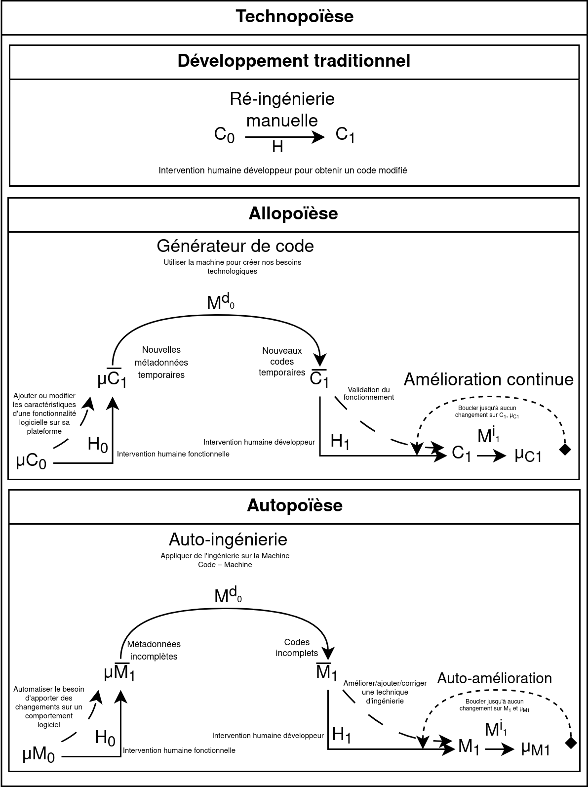
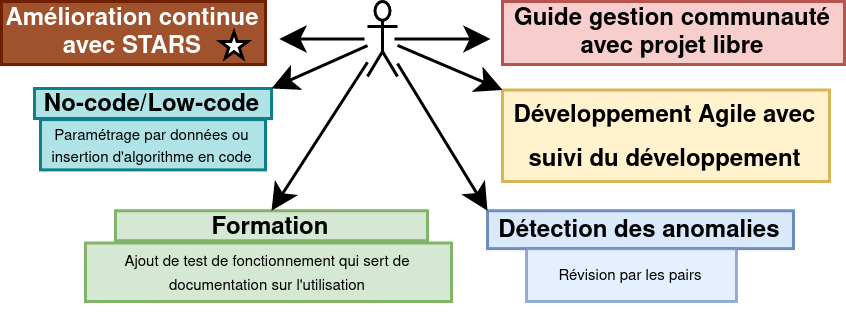

Présenté par Mathieu Benoit
- Martin TRÉPANIER, président
- Samuel BASSETTO, membre et directeur de recherche
- Giovanni BELTRAME, membre
Plan de présentation
-
Introduction
- Problématique
- Poïèse
- Auto-reproducteur
- Logiciel libre
- Objectifs et méthodologies
- Résultats
-
Conclusion
- Principale conclusions de la recherche
- Question demeurée sans réponse
- Débouchent sur de nouvelles voies de recherche
- Démonstration
Problématique locale : Gestion des besoins de sociétés jusqu'aux individus
- Communication
-
Partage et gestion des ressources
- Gestion du matériel
- Suivi des procédures et traçabilité
- Système de reconnaissance sur l'entraide
- Amélioration continue
Et bien plus encore!
- Plateforme ERPLibre 1.5.0 qui utilise Odoo 12 communautaire
- 2977 modules accessibles
- ecommerce, sondage, portail, newsletter, support client, CRM, contact, suivi de fabrication, projet, etc.
- Marché des solutions ERP évalué autour de 40 milliards USD mondialement en 2020
- Développement perpétuel, de longue durée, coûteux en temps et argent
- Difficile d'avoir une pérennité sur des projets bénévoles
- Maintenance exigente et risque d'introduire des erreurs est important

Pour réduire le temps de développement, faciliter son déploiement et le suivi de la satisfaction d'utilisation.
Poïèse
Processus créatif de fabrication, de production ou de création.
Technopoïèse
Processus créatif de développement technologique.
Capacité de l'humanité à créer et à façonner la technologie pour répondre à ses besoins et à ses désirs.
La technologie est un outil.
Allopoïèse
Un système qui développe quelque chose avec des composantes externes.
Autopoïèse
Un système qui se développe soi-même avec seulement des composantes internes.
Contraire de l'Allopoïèse
- Autonome
- Individuel
- Connaissant et établis ses limites
- Absent d'entrant et de sortant
C'est un auto-reproducteur!
Sympoïèse
Un système qui se développe en collectivité et en collaboration qui a un effet bénéfique sur les écosystèmes.
- Technologie éthique
- Sortir des individus/organismes de l'isolement
- Gérer des cas d'urgences
- Mouvement des villes en transition
Auto-reproducteur
Le quine se produit par lui-même, de niveau 0. C'est un programme informatique qui imprime son propre code source.
Rétro-ingénierie
Capacité d'extraire des informations sur un code pour créer une altération et permettre la ré-ingénierie grâce à l'arbre de la syntaxe abstraite(AST).
Génération de code par rétro-ingénierie

Boucle de génération de code qui permet l'amélioration continue. Auto-génération lorsque
C = M
Logiciel Libre
- utiliser sans restriction;
- étudier pour comprendre;
- copier pour s'attribuer;
- modifier pour adapter, en redistribuant.
Logiciel libre en industrie
- respecter les demandes et besoins de leurs consommateurs;
- bénéficier d'une réduction du gaspillage de temps de développement par la réutilisation de code existant;
Copier du logiciel utilise peu de ressource matérielle. Le développement de logiciel est une ressource infinie dont la fabrication est coûteuse en temps.
Objectifs
- développer un générateur de code de module sur Odoo;
- développer une logique d’amélioration continue sur l’écriture du code;
- développer une interface permettant de paramétrer la génération de code;
- développer un système de distribution;
- développer un système de gestion de communauté.
Méthodologie SO-1
- Développer une logique d’écriture de module sur une architecture de MVC avec support de plateforme web;
- Mise en place d’un concept de gabarit de code qui génère du code;
- Mise en place de la génération de code à partir de données;
- Générer un module à partir d’une base de données externe.
Méthodologie SO-2
- Développer la capacité de comprendre une structure de code et de la reproduire;
- Définir ce qui est de l’amélioration continue et son application dans un contexte d’automatisation;
- Mise en place de test de validation de code sur des critères de qualité mesurables;
- Intégration de règles de codage standardisées pour favoriser le réseau d’entraide.
Méthodologie SO-3
- Proposer une classification des techniques que le robot logiciel codeur peut réaliser en programmation;
- Développer une interface permettant le contrôle du robot logiciel codeur pour l’orienter dans la programmation de fonctionnalités;
- Rendre disponible une interface LCNC1 pour permettre aux utilisateurs de programmer leurs fonctionnalités.
Méthodologie SO-4
- Pour la section déploiement, il faut développer un système de distribution du robot logiciel codeur.
Méthodologie SO-5
- Documenter les processus de développement pour amener les utilisateurs à contribuer;
- Mettre des guides pour permettre le sentiment d’appartenance;
- Mettre en place une politique tolérance zéro avec un système de communication non violente et créer un lieu de discussion publique;
- Élaboration du prototype pour les spécifications du réseau de l’Accorderie du Canada;
- Élaboration du prototype pour les spécifications de l’organisme CEPPP du Canada;
Résultat du générateur de code

1. MVC - 2. Gabarit - 3. Données - 4. BD externe
Séquence d'utilisation

Résultat de l'amélioraton continue
- Extraction du code via l’utilisation d’un AST et extraction des méta-données dans les fichiers XML;
- Amélioration continue sur la génération de code grâce à la reproduction à l’aide de l’extraction du code;
- Un outil pour aider à la création de technique de génération à l’aide d’un générateur de générateur de code;
- Le générateur de code est accompagné de tests de validation en reproduisant l’ensemble des techniques en démonstration;
- La génération de code applique des règles de codage standardisées.
Résultat sur l'interface


Résultat sur la distribution
Distribution du travail via docker pour déploiement rapide.
Résultat sur la gestion de communauté
Accorderie

Migration de données, migration du modèles de données, génération du portail, etc.
CEPPP
Extraction du modèle de données d'une plateforme externe en PHP + ré-ingénierie.

CEPPP (SUITE)
Anonymisation des données (non supporté par le générateur)
Principale conclusions de la recherche
Ingénierie
Principale conclusions de la recherche
Communauté
Question demeurée sans réponse
Manque de test et métrique sur les performances de génération et d'utilisation.
Manque d'intégration des procédures de gestion de communauté à même l'outil.
Manque d'outil pour compléter le devops.
Manque de configuration sur la génération pour différent paramètre.
Question demeurée sans réponse
Auto-poïèse à terminer.
Peut-on générer toute la plateforme entièrement pour Accorderie et CEPPP?
Débouchent sur de nouvelles voies de recherche
Intégration NLP, auto-génération, auto-amélioration. Robot codeur libre!
Tester la gestion de projet en simulation état d'urgence.
Démonstration
- Cron : exécution automatique de script à une date ou heure spécifiée à l'avance.
- Migration MySQL : création d'un modèle et vue selon le schéma de base de données.
- Génération snippet : création d'un modèle et génération snippet sur site web.
- Carte interactive : création du frontend avec Leaflet connecté au modèle géospatiale.
Cron ↑
✓ modifier paramètre cron et regarder les différences
Migration MySQL ↑
✓ faire afficher un nouveau champ lors de la migration
Génération snippet ↑
✓ créer modèle et générer snippet
Carte interactive ↑
✓ démontrer une génération complexe